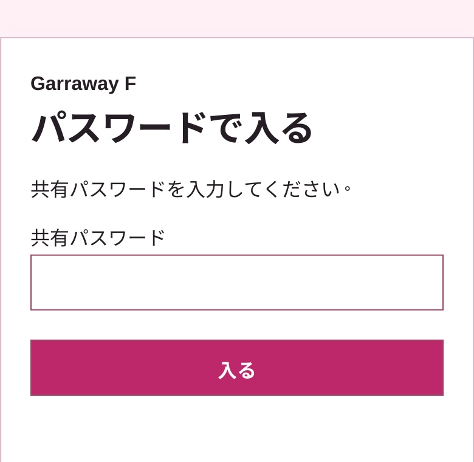
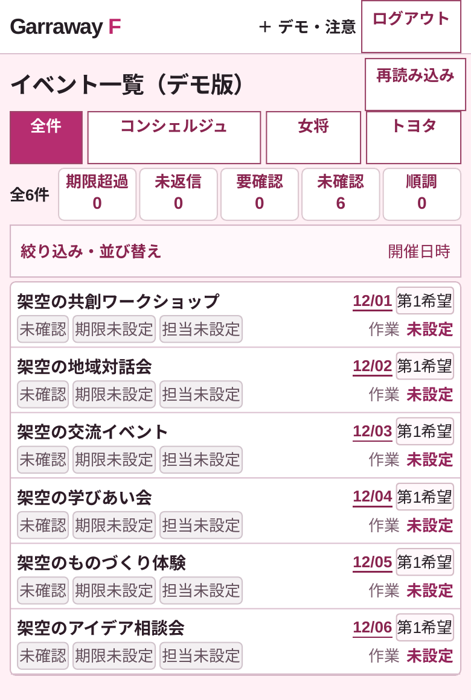
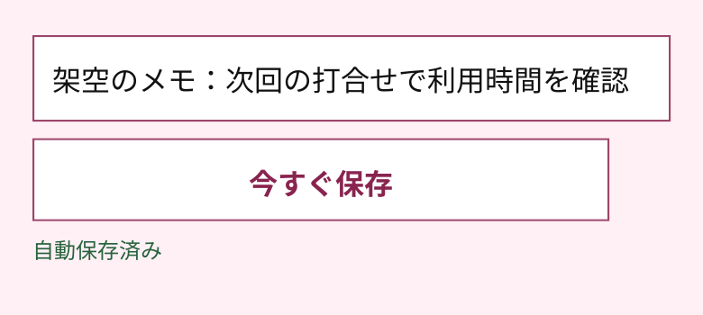

EVENT APP GUIDE
コンシェルジュ向けカタログ
みんなで確認し、
進行を記録する。
申請を受け取り、案件の情報・担当・作業を確認する管理サイト。関係者共通のパスワードで入り、試験用コピーを共同で編集します。
共有パスワードでのスマホ入場を確認済み。申請の管理側への反映も確認済みです。共有ログイン後の編集保存は、実機確認中。原票は変更しません。
確認と引き継ぎを、ひとつの画面で。
相手別に確認する
全件・コンシェルジュ・女将・トヨタの表示で、確認待ちや結果の記録を見分けます。
情報を共同で更新する
担当者・チームを複数記録し、メモなどを自動保存。管理票で6工程を確認します。
実施・受領を残す
各工程で行ったこと・受け取ったことと実際の日を記録。相談や判断の補足も残せます。
まずは、4つの操作。
- 01
共有パスワードで「入る」
管理サイトを開き、施設から別途案内されたパスワードを入力します。個別Googleログインではなく、共通パスワードで利用する方式です。
- 02
表示を切り替え、対象の案件へ
全件／コンシェルジュ／女将／トヨタで確認。「取消・見送りも表示」で除外案件も確認できます。表示切替で権限は変わりません。
- 03
管理票で、担当・メモを更新
「コンシェルジュ担当者」には1行に1名・1チームを入力。「注意事項・引継ぎメモ」などは入力後に自動保存します。
- 04
保存を確認し、実施・受領を記録
メモは「自動保存済み」を確認。「運用の進捗を記録」で作業と実施・受領日を選び、「事実を記録する」を押します。実際に行った内容だけを記録します。
同じ6段階で、実施・受領を確認。
- 01事前申し込み
- 02詳細すり合わせ
- 03承認
- 04開催準備
- 05当日
- 06結果報告
入口、表示切替、保存の目印。



公開版に備わる主な機能
- 受付案件・管理票・6工程の確認
- 複数の運用担当名、メモなどの自動保存
- 実施・受領の記録、判断・相談の追記
操作しても行われないこと
- 表示切替・担当名による権限変更
- 正式な最終承認・申請者への承認通知
- 申請者へのメール送信・署名の代行
保存とログインの、3つの注意。
保存：「保存中…」が終わるのを待ちます。結果が不明なら「保存結果を確認」。競合表示が出たときは入力を残して最新の状態と照合し、上書きを急がないでください。
共同利用：履歴は共有アクセスのセッション単位。担当名・判断者名は表示用の記録で、個人の本人確認ではありません。実施・受領や判断・相談の追記は、ボタンで記録します。
利用時間：同じタブは最大2時間。期限内の再読み込みはログインを復元します。終了時は「ログアウト」。期限切れ・失効後は再入力します。
運営向け通知は試験中です（日本時間9時・14時・19時の設定）。試験メールの受信・重複抑止は確認済み。14時の定期配信は、まだ実測していません。
同意書・詳細ヒアリングなど原典全体の統合は、まだ公開版に反映されていません。現在の画面で確認できる項目だけを扱います。
管理サイトで、受付と進行を確認。
施設から案内された共有パスワードをご用意ください。
管理サイト：https://garrawayf.github.io/event-management-demo/concierge.html